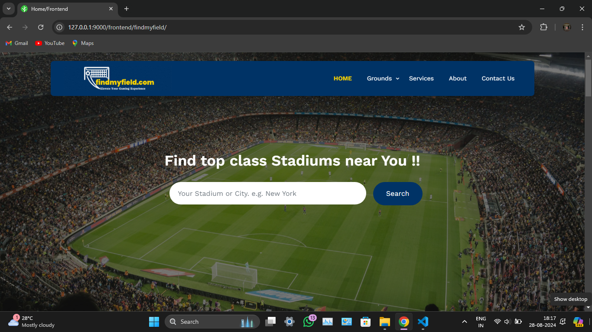

findmyfield.com
My personal projects, including a portfolio website, reflect my commitment to
continuous learning and innovation. I am particularly interested in exploring artificial intelligence
and its potential to transform various industries.

fly!bus Logistice Services
My personal projects, including a portfolio website, reflect my commitment to
continuous learning and innovation. I am particularly interested in exploring artificial intelligence
and its potential to transform various industries.